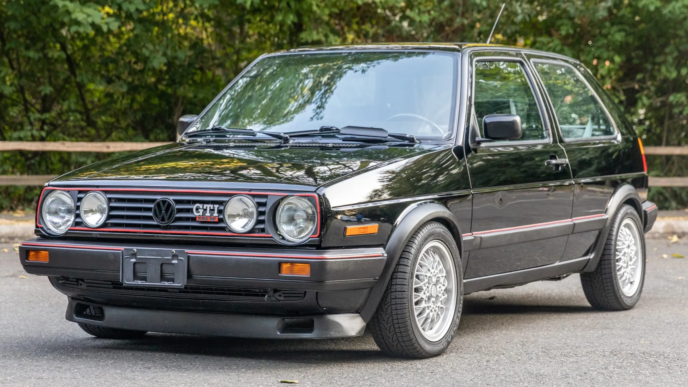

| a | a | a |
| a | a | a |
| a | a | a |
| a | a | a |

Motor 2.0 TSI turbo
Hatchback deportivo con motor 2.0 TSI de 220–230 HP, transmisión manual o DSG y un diseño que marcó la transición hacia el actual Mk8.
HACE UN AÑO
El Golf GTI nació en 1976 como un proyecto casi secreto dentro de Volkswagen. Su objetivo era crear un compacto deportivo accesible y terminó convirtiéndose en un ícono mundial.
El GTI Mk8 cuenta con motor 2.0 TSI turbo. La potencia y el equipamiento varían según la versión y el mercado.
El Golf GTI incorpora pantallas digitales, asistentes de conducción y diferentes tecnologías según el modelo.
Entre las versiones relacionadas con el GTI se encuentran el GTI estándar y, en determinados mercados, el GTI Clubsport.
El Volkswagen Golf GTI nació en 1976 y se convirtió en uno de los compactos deportivos más conocidos.
El Golf GTI ha evolucionado a través de distintas generaciones, con cambios en motor, diseño y tecnología.
Destaca por su parrilla deportiva, detalles rojos, rines y elementos distintivos de la familia GTI.
Sus características tecnológicas dependen de la generación y el equipamiento.
Existen diferentes versiones y paquetes de equipamiento según el mercado.
El Volkswagen Golf GTI nació en 1976.
Golf GTI
Modelo Mk8
Volkswagen